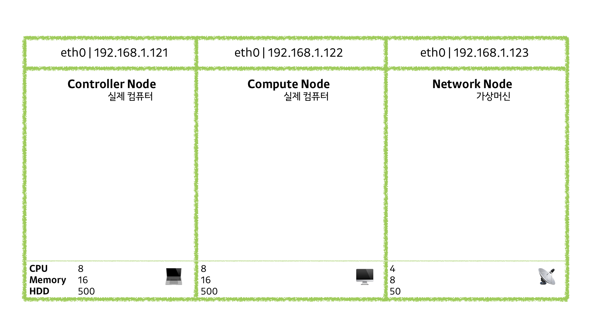
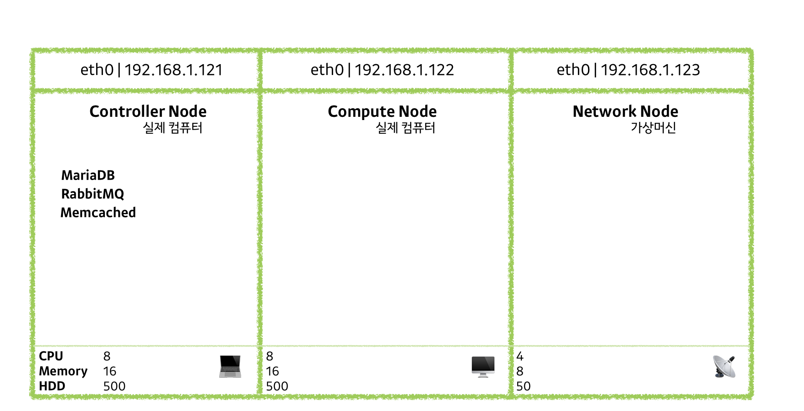

1. 사전 준비

1) 네트워크 설정
(1) 호스트명 설정
[1] controller 노드
vi /etc/hosts 아래에 다음 내용 추가
vi /etc/hostname 파일에 기존 내용 지우고
controller, compute, network 노드 각각 이름에 맞게 다음과 같이 수정
저장 및 종료
재시작
2) 지역 설정
[1] controller, compute, network
init 6
3) NTP 설정
수백 수천의 컴퓨터가 동기화 된 상태로 동작하기 때문에 서로 시간 값을 맞춰 줄 필요가 있다.
NTP를 이용하여 시간 서버로부터 같은 시간을 전달받을 수 있도록 설정한다.
[1] controller
시간 서버 설치
시간 서버 설정
들어가서 다음처럼 수정
(1)
pool 2.centos.pool.ntp.org iburst -> pool 1.kr.pool.ntp.org iburst
이 부분을 ~ ~~~~~~~~~~~~~~ ~~ > 이렇게
한국 시간 서버로 설정한다.
(2)
#allow 192.168.0.0/16 -> allow 192.168.1.0/24
이 부분을 ~~~~~ ~~~~~ > 이렇게
주석 제거 및 네트워크 대역 허용
파일 내용 저장 후 나와서
재부팅 후에도 실행 되도록 설정
서비스 재시작
확인 ::
위 명령어 결과로 여러 서버(2가지?)가 나와야 함 !
[2] compute, network
pool 2.centos.pool.ntp.org iburst -> pool controller iburst
컨트롤러 시간 서버로 설정
확인 컨트롤러가 (하나 정도?) 나와야 함.
4) DB 설치
대부분의 OpenStack 서비스는 SQL 데이터베이스를 사용하여 정보를 저장.
데이터베이스는 일반적으로 컨트롤러 노드에서 실행한다.
아래 경로에 파일 생성.
엔터 Y [새 PW] [새 PW 확인] Y Y Y Y
패스워드 설정한 후 Y로 대답 Y로 대답 Y로 대답
5) 오픈스택 패키지 설치
6) 메세지 큐 'RabbitMQ' 설치
OpenStack은 메시지큐를 사용하여 서비스 간의 작업 및 상태 정보를 조정.
메시지큐 서비스는 일반적으로 컨트롤러 노드에서 실행.
OpenStack은 RabbitMQ , Qpid 및 ZeroMQ를 포함한 여러 메시지 대기열 서비스를 지원한다.
7) Memchached 설치
서비스를 위한 Identity 서비스 인증 메커니즘에서 토큰을 캐싱하기 위해 Memcached를 사용.
파일에서 5번 라인 내용 변경.
OPTIONS="-l 127.0.0.1,::1" -> OPTIONS="-l 127.0.0.1,::1,controller"
이것을 --- --- --- --- ---> 이렇게
여기까지의 상황 👇🏻
